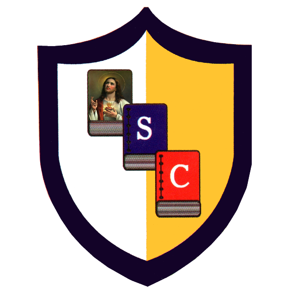

Faltan Fotos
Identidad Estudiantil
Unidad Educativa Fiscomisional
Unidad Educativa Fiscomisional
"Sagrado Corazón"
Esmeraldas - Ecuador
Por favor coloca tu foto 1000114995.jpg en esta carpeta
Estudiante
Arcos Castillo Raul Alberto
Registro de Alumno Activo
Ubicación
Esmeraldas, Ec
Año Lectivo
2026 - 2027
Herramienta de Impresión
Crea tu Código QR Académico
Sube esta página a internet (por ejemplo en Netlify) y copia el enlace aquí para generar tu QR de acceso oficial.
Código QR Generado
Al escanear este código, se abrirá tu perfil estudiantil oficial en cualquier smartphone.